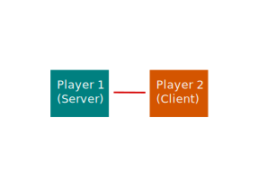
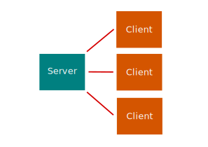
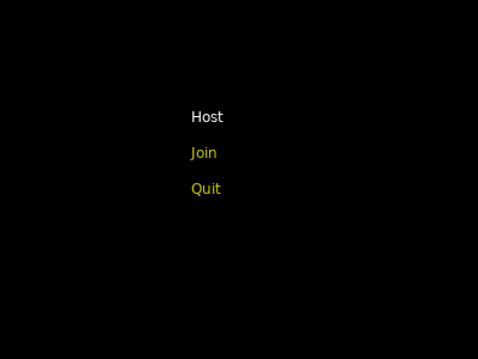
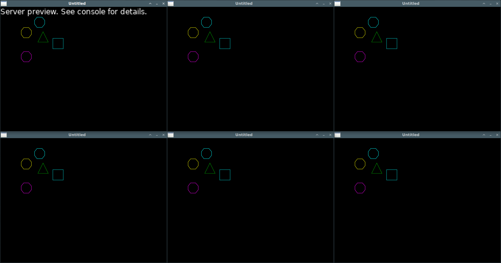

Networking (part 2)
In the previous section we made two applications that could talk to each other. One application was the server and the second one connecting to it was the client. In game design this style of networking can be described as a direct connection.
Direct connection

In a direct connection one of the players takes on the role of server, meaning their game world is the ultimate authority if there are any discrepancies or out-of-sync communication between the two. This also means the server player can find ways to cheat and exploit the game.
One of the advantages to this setup is since you are directly connected to each other, you get as minimal lag as possible. This advantage doesn't hold true if there are more than 2 players. If player 1 is the server and player 2 and 3 are connected to player 1, then player 2 and 3 have to relay updates to each other through player 1 instead of directly to each other. Outside of 2-player games, this setup isn't as popular as having a dedicated server.
Dedicated server

Dedicated servers are exactly what they sound like. They are hosts dedicated to serving players. The difference here is all players are clients and the server is a neutral ground where players can connect and communicate indirectly with each other through it. Servers typically run a modified version of the game code that has no user interface and therefore can run on a less expensive computer. If one of the players is detected cheating the server can detect that something is wrong and kick them from the game. The server is the ultimate authority over the state of the game world.
Our network setup will sort of be a mix between the two styles of networking. We'll have a dedicated server that doesn't participate in the gameplay, but the server will have a graphical interface so we can view what is going on during our testing.
Consolidating our code
Rather than managing two folders of code like in the previous section, we'll combine the code and use a menu system to select between being a server and being a client. The menu code isn't important to this tutorial so try to focus on the client and server code as before. The refactored code can be found in the code repository here.
Given the amount of files it is easiest to download the zip of the whole project where you will find the relevant files inside code/networking-2: https://github.com/RVAGameJams/learn2love/archive/master.zip
Once downloaded, when you run the program you should be greeted with a menu screen like so:

Test it out and confirm you can connect a server and client instance with the new code.
Ok.
The modifications to main.lua should be easy enough to understand.
Let's take a look at that and the new "net" service first before we begin making any modifications.
At the top of the file we're loading the net and menu services then telling the menu service which menu to load on startup:
-- main.lua
local menu_service = require('services/menu')
local net_service = require('services/net')
love.load = function()
-- Keep text pixels sharp and intact instead of blurring
-- https://love2d.org/wiki/FilterMode
love.graphics.setDefaultFilter('nearest', 'nearest')
menu_service.load('main-menu')
end
Next, if a key is pressed it will pass that pressed-key event to the menu service. If we are in the game and no menu is loaded, the menu service will do nothing with the event.
love.keypressed = function(pressed_key)
menu_service.handle_keypress(pressed_key)
end
Inside love.draw we have a similar story.
If we have an active menu then menu_service.draw() will draw it
Otherwise it won't do anything.
(If you open services/menu.lua you will see the draw function where this all happens.)
love.draw = function()
menu_service.draw()
-- Scale up the size of the text being printed
local transform = love.math.newTransform(0, 0, 0, 3)
if net_service.is_connected() then
love.graphics.print('peer connected (see console)', transform)
end
end
Another thing inside love.draw is a check to see if we've made a connection either as server or client (using net_service.is_connected()) then draw the "peer connected" text on the screen as before.
We use the word "peer" as a generic term to refer to either the client we're connected to (if we're the server) or the server (if we're the client).
Inside love.update and love.quit we have combined the code we had before and added a menu.update() call.
If there is a menu, update it.
If either a server host or client host is running, net.update() will update it.
love.update = function()
menu_service.update()
net_service.update()
end
love.quit = function()
net_service.disconnect()
end
So everywhere we were calling "server" or "client" we just call net_service and it will do it's thing no matter the type of connection.
Let's open up net.lua and we'll see something very close to the original code:
-- net.lua
local enet = require('enet')
-- Populate one or the other depending if we start a server or client host
local client_host
local server_host
-- As a server, we want to keep track of all the connected clients
local peers = {}
local received_data = false
-- The service we will be returning
local net = {}
At the top of the file we create some empty local variables.
The net table is full of functions that are being used in main.lua and elsewhere.
net.start_server = function()
server_host = enet.host_create('localhost:6789')
end
net.start_client = function()
client_host = enet.host_create()
server_host = client_host:connect('localhost:6789')
end
On the menu when you select "Host" or "Join", the net.start_server and net.start_client functions are being called respectively.
Below that are some functions to check what kind of connection we have:
net.is_connected = function()
return received_data
end
net.is_client = function()
return client_host and true or false
end
net.is_server = function()
return server_host and not client_host
end
Then finally we have the update and disconnect code like we originally had in the server and client services, but combined.
One addition to the disconnect function is we are looping over the peers list.
The peers list exists because we are expecting to have multiple players connect to the server and if the server is running, it will want to disconnect from them all when the game quits.
Communication layer
Before we update the code, let's discuss the functionality and draw out the network communication for that functionality.
- When connecting to the server you should have a controllable player spawn on screen
- When you move your player, your peers should be able to see your player move
- When other peers move their players, you should be able to see them move
- Each player should look different so you know which one is you
| Client | Server | Description |
|---|---|---|
| (Create a host) | (Create a host) | Both client and server's net services are booted. No communication has been made between the two at this point. |
| Send "connect" message to server | Client sends a connect message automatically. This will be interpreted as a request to join the game. | |
| (Spawn entity) | Server generates and stores all the entities in the game. When spawning an entity, associate the client's connection ID with it. | |
| Respond "your-id|4177457821|100|500" | Server responds by passing the client a "your-id" message. All messages sent must be strings so in this case where multiple values need to be embedded in the message, each value is separated by a pipe ("|") character to help us re-separate the values when receiving the message client side. The first value is the unique player ID that the server has assigned the client, followed by the X position then Y position. |
|
| Send "peer-id|233142890|326|177" | Server sends the new client other peers that need to be spawned on screen. Included are the ID, X and Y position of that player. | |
| Send "move|233142890|327|177" | Server is letting the client know the player with the ID "233142890" has changed position. Notice the updated X position. | |
| Send "move|233142890|328|177" | Another move update. | |
| Send "move|100|502" | Client is letting the server know it is moving its player too. | |
| Send "peer-id|81850530|500|500" | Another player has joined the server. |
Adding entities
On connection from a client, the server needs to spawn entities so let's create an entity service for handling all our entity-related needs:
-- entity.lua
local entity_service = {}
-- All player entities
entity_service.entities = {}
entity_service.spawn = function(player_id, x_pos, y_pos)
return {
-- TODO: We'll add a color randomizer later
color = {1, 1, 1, 1},
id = player_id,
-- TODO: We'll add a shape randomizer later too
shape = love.physics.newPolygonShape(0, 0, 50, 0, 50, 50, 0, 50),
x_pos = x_pos,
y_pos = y_pos
}
end
entity_service.draw = function(entity)
love.graphics.setColor(entity.color)
local points = { entity.shape:getPoints() }
for idx, point in ipairs(points) do
if idx % 2 == 1 then
points[idx] = point + entity.x_pos
else
points[idx] = point + entity.y_pos
end
end
love.graphics.polygon('line', points)
end
return entity_service
These entities will just be basic shapes. No world, body, or fixtures to worry about as dealing with physics is a bit out of the scope of this section.
Now we'll do some heavy upgrades to the net service. Somewhere near the top of the file we'll define two tables with callbacks that will get invoked when an event comes in. They'll be empty functions for now and we'll fill them out as we go.
-- Callbacks to invoke when certain events are received from a peer
-- Define a callback to handle every type of message in our application protocol
local message_handlers = {
['your-id'] = function(message, event, is_server)
end,
['peer-id'] = function(message, event, is_server)
end,
['move'] = function(message, event, is_server)
end
}
-- These event types are defined by Lua-enet. A "receive" type of event
-- is a generic event that carries any of the messages above.
local event_handlers = {
connect = function(event, is_server)
end,
disconnect = function(event, is_server)
end,
receive = function(event, is_server)
end
}
Then we'll modify the net.update function so it can call one of the three callbacks inside the event_handlers table:
net.update = function()
local host = client_host or server_host
if not host then return end
local event = host:service()
if event then
received_data = true
-- event.type will be either "connect", "disconnect", or "receive"
event_handlers[event.type](event, net.is_server())
-- Print out the event table for debug purposes
print('----')
for k, v in pairs(event) do
print(k, v)
end
end
end
So you see, event_handlers.connect will be called when a "connect" type event comes in and we'll pass it the event and net.is_server() boolean as its two parameters.
Now we can go back and fill out the "connect" event handler.
Read each code comment as there is a lot going on here in just a few lines of code.
local event_handlers = {
connect = function(event, is_server)
-- Only the server needs to do stuff here on connect
if is_server then
-- event.peer:connect_id() provides us with a unique number.
-- We'll convert that number to a string and use it as the player ID.
local player = entity_service.spawn(tostring(event.peer:connect_id()), 100, 100)
-- Store this player in the player table with the player ID as the key.
entity_service.entities[player.id] = player
-- Send the initial "your-id" message back to the connecting client so they can spawn this entity too.
event.peer:send('your-id|' .. player.id .. '|' .. player.x_pos .. '|' .. player.y_pos)
end
end,
disconnect = function(event, is_server)
-- TODO: Add code to remove entities when a client disconnects
end,
receive = function(event, is_server)
-- TODO: Add code to parse "receive" events and call the appropriate message handler callback
end
}
Since we're using the entity service in net.lua we'll need to require it at the very top:
local entity_service = require('services/entity')
Now that the player receives the message to spawn an entity, we can fill out the "receive" event handler.
local event_handlers = {
connect = function(event, is_server)
-- Only the server needs to do stuff here on connect
if is_server then
-- event.peer:connect_id() provides us with a unique number.
-- We'll convert that number to a string and use it as the player ID.
local player = entity_service.spawn(tostring(event.peer:connect_id()), 100, 100)
-- Store this player in the player table with the player ID as the key.
entity_service.entities[player.id] = player
-- Send the initial "your-id" message back to the connecting client so they can spawn this entity too.
event.peer:send('your-id|' .. player.id .. '|' .. player.x_pos .. '|' .. player.y_pos)
end
end,
disconnect = function(event, is_server)
-- TODO: Add code to remove entities when a client disconnects
end,
receive = function(event, is_server)
-- Extract the message out from the event and call the appropriate callback above
local message = {}
for match in (event.data .. '|'):gmatch('(.-)|') do
table.insert(message, match)
end
message_handlers[message[1]](message, event, is_server)
end
}
Don't let this code feel intimidating as it's only taking the string message from the event ("your-id:87335:500:500") and splitting it into a list table ({ "your-id", "87335", "500", "500" }) so we can work with the data.
Once we have the message fragments, we call message_handlers[message[1]](), where message[1] will be one of the keys in the message_handlers table: "your-id", "peer-id", or "move".
Let's fill out the "your-id" handler first:
-- Callbacks to invoke when certain events are received from a peer
-- Define a callback to handle every type of message in our application protocol
local message_handlers = {
['your-id'] = function(message, event, is_server)
local player_id = message[2]
local x_pos = message[3]
local y_pos = message[4]
entity_service.player_id = player_id
entity_service.entities[player_id] = entity_service.spawn(player_id, x_pos, y_pos)
end,
['peer-id'] = function(message, event_is_server)
end,
['move'] = function(message, event, is_server)
end
}
Now when the client gets the "your-id" message, it can spawn an entity too. Let's add the appropriate code to main.lua for drawing entities so we can see if our protocol is working so far:
-- main.lua
local entity_service = require('services/entity')
...
love.draw = function()
menu_service.draw()
-- Scale up the size of the text being printed
local transform = love.math.newTransform(0, 0, 0, 3)
if net_service.is_connected() and net_service.is_server() then
love.graphics.setColor({1, 1, 1, 1})
love.graphics.print('Server preview. See console for details.', transform)
end
for _, entity in pairs(entity_service.entities) do
entity_service.draw(entity)
end
end
If you've updated everything correctly, you'll see this happen when a server and client run side-by-side:

If you get an error, remember to check the line number and filename where the error occurred and make sure the code looks similar to how it is above. If you get stuck, there will be a full example available at the bottom of this section.
If everything is working for you then fantastic. This means the server and client are successfully syncing an entity state with each other.
Next let's add movement so we can see live updates happening between the two game windows. Inside the services folder, we'll create an input.lua file that returns an empty table:
-- input.lua
return {}
Why are we returning an empty table?
Well, it's only empty right now, but as keys are pressed and released our table will get updated.
Let's update love.keypressed and add a love.keyreleased function to main.lua to see how that works:
-- main.lua
local input_service = require('services/input')
...
love.keypressed = function(pressed_key)
menu_service.handle_keypress(pressed_key)
input_service[pressed_key] = true
end
love.keyreleased = function(released_key)
input_service[released_key] = false
end
Now when we press some arrow keys for instance, our table in input.lua will look more like this in memory:
{
left = true,
right = false,
up = true,
down = false
}
Now inside entity.lua we'll add an entity_service.move function that checks for input changes and moves the entity if any of the arrow keys are pressed:
-- entity.lua
local input_service = require('services/input')
...
entity_service.move = function()
local player = entity_service.entities[entity_service.player_id]
-- Don't let the player press up and down at the same time
if input_service.up and not input_service.down then
player.y_pos = player.y_pos - 2
elseif input_service.down and not input_service.up then
player.y_pos = player.y_pos + 2
end
-- Don't let the player press left and right at the same time
if input_service.left and not input_service.right then
player.x_pos = player.x_pos - 2
elseif input_service.right and not input_service.left then
player.x_pos = player.x_pos + 2
end
end
This will cause our entity to move across the client's screen, but the server won't get these updates unless the client sends them over.
We need to go back to main.lua and send a "move" message.
Inside love.update check to see if the player position has changed and send a move message to the server if so:
love.update = function()
menu_service.update()
-- Check to see if a player has spawned and update its movement if any direction keys are being pressed
if entity_service.player_id then
local player = entity_service.entities[entity_service.player_id]
local old_x = player.x_pos
local old_y = player.y_pos
entity_service.move()
if player.x_pos ~= old_x or player.y_pos ~= old_y then
net_service.send('move|' .. player.id .. '|' .. player.x_pos .. '|' .. player.y_pos)
end
end
net_service.update()
end
The net_service.send function we haven't defined that yet.
Jump back over to net.lua and we'll define that for sending either client or server messages if needed:
net.send = function(message)
if net.is_client() then
server_host:send(message)
else
server_host:broadcast(message)
end
end
Now we are sending a message to the server when we move, but we need to have the server read the message and update the entity position on its end too. Let's fill out the "move" message handler in net.lua to accomplish this:
local message_handlers = {
['your-id'] = function(message, event, is_server)
local player_id = message[2]
local x_pos = message[3]
local y_pos = message[4]
entity_service.player_id = player_id
entity_service.entities[player_id] = entity_service.spawn(player_id, x_pos, y_pos)
end,
['peer-id'] = function(message, event, is_server)
-- TODO: handle peer-id messages for when more players join the server
end,
['move'] = function(message, event, is_server)
local player_id = message[2]
local x_pos = message[3]
local y_pos = message[4]
entity_service.entities[player_id].x_pos = x_pos
entity_service.entities[player_id].y_pos = y_pos
if is_server then
-- Relay this message to the other players
for id, peer in pairs(peers) do
if id ~= player_id then
peer:send(event.data)
end
end
end
end
}
Notice the extra server check.
If the server received the "move" command it should relay it over to any other connected player so they can see you moving too.
The peers table needs to be defined inside net.lua above the message handlers or you may get an error when it tries to loop over the table and sees a nil value that hasn't been defined yet.
Try it out again and we should see the square moving on both screens now.
All that hard work is starting to pay off!
We have a few more changes to make for this to be fully functional though.
If you try and run the game now with multiple clients, the players won't see each other.
In our application protocol we defined a peer-id message so that when new players connect we receive information to spawn them.
Inside net.lua, go ahead and fill out the "peer-id" message handler so that it spawns an entity when invoked:
['peer-id'] = function(message, event, is_server)
local player_id = message[2]
local x_pos = message[3]
local y_pos = message[4]
entity_service.entities[player_id] = entity_service.spawn(player_id, x_pos, y_pos)
end,
Now the server needs to send all the peers to a new player connecting, but it also needs to send new players to pre-existing peers during a connect event. We'll update the "connect" event handler to do that:
connect = function(event, is_server)
-- Only the server needs to do stuff here on connect
if is_server then
-- event.peer:connect_id() provides us with a unique number.
-- We'll convert that number to a string and use it as the player ID.
local player = entity_service.spawn(tostring(event.peer:connect_id()), 100, 100)
-- Store this player in the player table with the player ID as the key.
entity_service.entities[player.id] = player
-- Send the initial "your-id" message back to the connecting client so they can spawn this entity too.
event.peer:send('your-id|' .. player.id .. '|' .. player.x_pos .. '|' .. player.y_pos)
-- Let all the other peers know about this player
for _, peer in pairs(peers) do
local peer_player = entity_service.entities[tostring(peer:connect_id())]
peer:send('peer-id|' .. player.id .. '|' .. player.x_pos .. '|' .. player.y_pos)
event.peer:send('peer-id|' .. peer_player.id .. '|' .. peer_player.x_pos .. '|' .. peer_player.y_pos)
end
-- Add this peer to the peer list
peers[tostring(event.peer:connect_id())] = event.peer
end
end,
After sending the new client their id as "your-id", we send that id to every other client as "peer-id" in the for loop.
Notice we add the new connecting client to the peer table at the very end.
We do this after looping over the peer list so we don't send that client a "peer-id" message of themselves.
Again, when registering peers and entities we call tostring() on the connect_id() to ensure we are storing IDs as strings rather than numbers.
Storing data in tables it matters whether you store them as keys or numbers.
See 1.14 - Tables (part 2) to see what I mean.
Anyways, try running the game now with multiple clients connecting to the server and you will see each entity can move separately and the changes will be synchronized across all clients.
One change to make the entities easier to distinguish would be to randomize their color and shape.
Let's modify entity_service.spawn inside entity.lua:
entity_service.spawn = function(player_id, x_pos, y_pos)
local colors = {
{1, 0, 0, 1},
{0, 1, 0, 1},
{0, 0, 1, 1},
{0, 1, 1, 1},
{1, 0, 1, 1},
{1, 1, 0, 1},
{1, 1, 1, 1}
}
local shapes = {
love.physics.newPolygonShape(25, 0, 50, 50, 0, 50),
love.physics.newPolygonShape(0, 0, 50, 0, 50, 50, 0, 50),
love.physics.newPolygonShape(12, 0, 36, 0, 49, 15, 49, 33, 36, 49, 12, 49, 0, 33, 0, 15)
}
return {
-- Cycle through the list of colors based on whatever the player id is
-- Calling tonumber() to make player_id a number instead of a string so we can do math on it
color = colors[(tonumber(player_id) % #colors) + 1],
id = player_id,
shape = shapes[(tonumber(player_id) % #shapes) + 1],
x_pos = x_pos,
y_pos = y_pos
}
end
Here we use a modulus to cycle through the list of colors and shapes and assign one based on the pseudo-random player ID we received. This also means a player will look the same on every other players' client. Try running it again and you should see something similar:

The final networking code can be found here.
Again, given the amount of files if you need the whole folder then it is easiest to download the zip of the whole project.
You will find the relevant files inside code/networking-3: https://github.com/RVAGameJams/learn2love/archive/master.zip
Conclusion
This is about as basic in functionality as a multiplayer game can get. There are many features missing from our code. Just to name a few major ones:
- Sanity checks on messages. You can crash the server by sending it an invalid message.
- The "move" message expects a player id when the server should be able to figure this out on its own. The server can easily be fooled into accepting "move" messages from a client to move another client.
- To make things simpler there is no world or physics nor any net code to handle collisions or anything of the like.
- The entities just stick around when you close/disconnect a client.
- If you lose connection, there is no attempt to restore the connection.
There is a great set of articles by Gabriel Gambetta on the problems faced by making a action-based multiplayer games and it's worth a read to get a high-level overview of the challenges and how to reason about them.
Exercises
- Having all the players spawn at the exact same point isn't ideal. Inside net.lua in the "connect" event handler, make a list of spawn points and make the players spawn at one of the points based on their
peer:connect_id(). Hint: the code should look similar to the color cycle code insideentity.spawnin entity.lua. - Inside net.lua, complete the "disconnect" event handler and make is so when a client quits their entity is removed from the game for all peers.